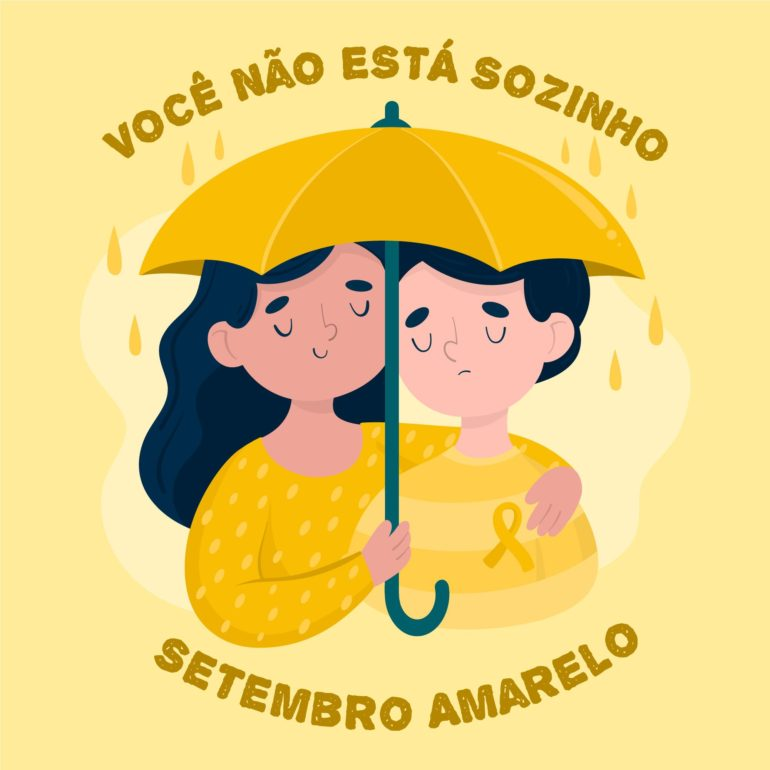

Setembro Amarelo é o mês (de 1 a 30 de setembro) dedicado à prevenção do suicídio. Trata-se de uma campanha, que teve início no Brasil em 2015, e que visa conscientizar as pessoas sobre o suicídio, bem como evitar o seu acontecimento. É nesse mês que no dia 10 se comemora o dia mundial de prevenção do suicídio. Ao mesmo tempo em que há muita discussão sobre o tema e que são organizadas caminhadas, durante esse mês alguns locais são decorados com a cor amarela. Assim, já foram iluminados de amarelo o Cristo Redentor, o Congresso Nacional, a Catedral e o Paço Municipal de Fortaleza, entre outros. Segundo a Organização Mundial de Saúde (OMS), 32 pessoas se suicidam por dia no Brasil, o que significa que o suicídio mata mais brasileiros do que doenças como a AIDS e o câncer. O assunto é envolto em tabus, por isso, a organização da campanha acredita que falar sobre o mesmo é uma forma de entender quem passa por situações que levem a ideias suicidas, podendo ser ajudadas a partir do momento em que as mesmas são identificadas. As situações que levam a esse fim podem surgir de quadros de depressão, bem como do consumo de drogas. É por isso que “Falar é a melhor solução” é o slogan da campanha, cujos envolvidos na sua organização acreditam que conscientizando as pessoas podem prevenir 9 em cada 10 situações de atos suicidas.
O Setembro Amarelo é uma campanha nacional de conscientização sobre a prevenção do suicídio. Durante todo o mês, a sociedade se une para debater saúde mental e para relembrar a importância de saber reconhecer sinais de comportamento depressivo ou suicida em familiares e amigos Todos nós devemos atuar ativamente na conscientização da importância que a vida tem e ajudar na prevenção do suicídio.